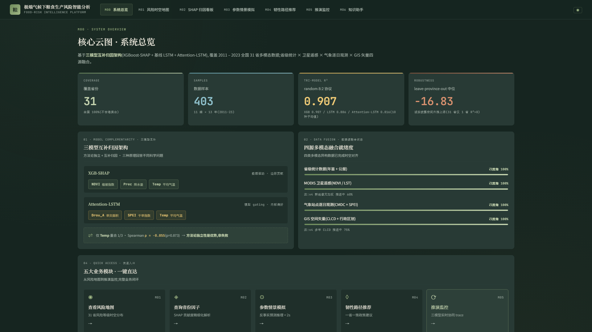
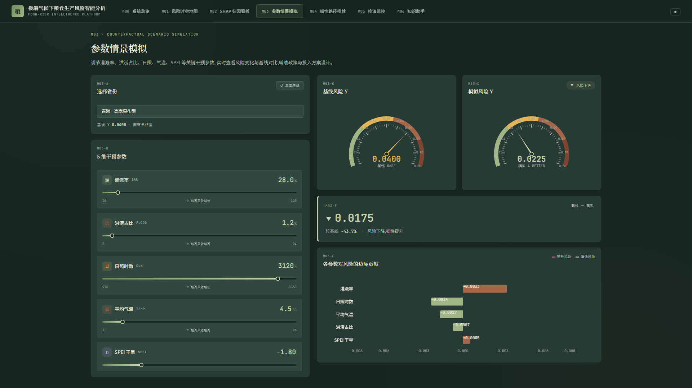

三、系统实现佐证（界面截图一）


本材料按"数据可追溯、模型可复核、系统可运行、质量可检验"四条线索组织，共收录五类佐证。所引数据与结论均与作品技术方案及系统内部记录一致，可逐项核对。
| 编号 | 材料名称 | 内容 | 佐证对象 |
|---|---|---|---|
| 一 | 数据资产佐证 | 四级面板数据规格、字段覆盖面与数据来源台账 | 数据基础是否可靠、来源是否合规 |
| 二 | 模型验证佐证 | 多协议交叉验证结果、消融实验与空间尺度递进实验 | 模型结论是否可信、边界是否如实披露 |
| 三 | 系统实现佐证 | 七个功能模块、九个服务接口、六张系统界面截图 | 平台是否真实可运行 |
| 四 | 软件质量佐证 | 自动化测试用例清单与安全、稳定性措施 | 工程质量与运行可靠性 |
| 五 | 知识产权与竞赛佐证 | 软件著作权申请材料清单与既往竞赛获奖情况 | 成果归属与既往评价 |
编制说明：本材料正文不含团队所在单位、指导教师与成员姓名信息。软件著作权登记与竞赛获奖的官方证书原件载有单位与成员信息，按赛事匿名要求单独留存，未编入本册；如赛务方需要核验，可按指定方式提交。
平台的数据底座由四个空间尺度的面板数据与一套空间基础数据构成，全部来自公开发布的国家统计、卫星遥感与气象再分析资料。四级面板的规格如下，样本量与字段数以本地数据文件实际统计为准。
| 数据集 | 规模 | 时间范围 | 监测与投入字段 |
|---|---|---|---|
| 省级多模态面板 | 31 个省 × 13 年，403 条样本 × 11 维特征 | 2011 至 2023 | 气温、降水、日照、干旱指数、洪涝占比、旱涝受灾面积、灌溉率、化肥、农机、植被指数、地表温度 |
| 城市级生产面板 | 10 个主产省 × 148 个地级市 × 13 年，1 924 条记录 × 28 字段 | 2011 至 2023 | 市级粮食产量、气象要素、耕地比例与生产条件 |
| 县级建模面板 | 1 041 个县 × 11 年，10 407 条记录 × 14 特征 | 2013 至 2023 | 县域气象、遥感植被与地表温度、灌溉、化肥、耕地比例 |
| 县级社会经济面板 | 2 725 个县 × 23 年，62 676 条记录 × 82 字段 | 2000 至 2022 | 播种面积、常用耕地面积、粮食总产量、棉花油料肉类产量、机械动力、人口、财政与用电等 |
县级社会经济面板由团队从公开出版的县域统计资料中整理提取。原始资料以分卷压缩包形式提供，中文文件名编码存在错误标记，团队按文件结构定位并重建了县级年度面板，提取过程已形成可复现脚本，可随时重新生成。该数据集为县域尺度的风险查询与规划建议提供了样本支撑，其县级单位数约为原建模面板的 2.6 倍，时间跨度由 11 年扩展至 23 年。
县级社会经济面板的部分指标在早期年份存在缺失，团队对原始值与插值填补值分别留存，便于在建模时按口径选择。主要字段的非空率如下。
| 字段 | 非空率 | 说明 |
|---|---|---|
| 经度、纬度 | 99.8% | 支撑空间匹配与地图展示 |
| 粮食总产量（吨） | 79.0% | 生产结果指标 |
| 农村居民人均可支配收入 | 66.5% | 区域发展水平控制变量 |
| 农林牧渔业总产值 | 58.9% | 农业经济规模 |
| 农作物总播种面积（千公顷） | 47.3% | 生产规模指标 |
| 常用耕地面积（公顷） | 46.3% | 耕地资源指标 |
| 机收面积（公顷） | 15.9% | 机械化水平参考 |
| 数据类别 | 来源 | 用途与合规说明 |
|---|---|---|
| 农业生产统计 | 国家统计局及各省统计公报、中国农村统计年鉴 | 产量、播种面积、化肥、灌溉、农机等指标，公开统计数据 |
| 县级社会经济指标 | 中国县域统计年鉴（2000 至 2024） | 县级产量与生产条件，公开出版物 |
| 气象要素 | NASA POWER 再分析数据、气象站点观测 | 气温、降水、日照，公开数据平台 |
| 干旱指数 | SPEIbase 标准化降水蒸散指数 | 干旱强度与生长季水分亏缺，公开数据集 |
| 遥感植被与地表温度 | MODIS 植被指数与地表温度产品 | 生长状况与地表热环境，公开卫星产品 |
| 耕地分布 | CLCD 30 米耕地覆盖数据 | 耕地像元加权与耕地比例计算，公开数据集 |
| 行政边界 | 天地图标准地图服务 | 空间聚合与地图绘制，含审图号 |
| 水旱灾害统计 | 中国水旱灾害公报 | 受灾与成灾面积，公开统计资料 |
以上数据均为公开发布资料，仅在授权范围内使用并标注来源，不涉及未公开数据与个人隐私信息。
模型层的全部结论均通过多协议交叉验证得出。团队刻意同时报告随机划分、时序外推与空间外推三套结果，用于界定模型的适用范围，避免以单一协议的高分掩盖外推能力的不足。
| 验证协议 | 结果 | 含义与用途 |
|---|---|---|
| 随机划分 8:2，10 组种子 | R² = 0.907 ± 0.038 | 省内因子相对重要性识别的主报告口径，用于模型层归因 |
| 留一年验证 | R² = 0.894 ± 0.104 | 检验时序泛化能力，模拟用历史数据推断未来年份 |
| 留一省验证 | 中位 R² = −16.83 | 31 个省中仅 1 个省为正，说明省级截面样本不支持跨省外推 |
| 县域留一县验证 | R² = 0.660 | 空间单元下沉到县后外推能力转正，支撑县域尺度服务 |
为进一步检验空间外推能力的成因，团队在三个空间尺度上做了同构实验。结果显示，随着空间单元细分，空间外推能力由负转正，表明省级外推受限主要来自空间单元过粗，而非方法本身失效。
| 空间单元 | 样本规模 | 空间外推结果 | 组内相关系数 |
|---|---|---|---|
| 省级 | 31 省 × 13 年，403 条 | 中位 R² = −16.83 | 0.971 |
| 城市级 | 70 个城市，910 条 | 合并 R² = 0.213，正向 3 折 | 0.106 |
| 县级 | 1 041 个县，10 407 条 | 合并 R² = 0.660 | — |
城市级实验为留一省交叉验证，县级实验为留一县交叉验证，两者目标变量口径不同，数值不作直接比较，仅用于说明空间单元粒度对泛化能力的影响方向。
团队为每个模型保留模型卡，记录训练配置、样本口径、评估结果与已知局限，可供复核。已归档的模型文档包括：
| 文档 | 内容 |
|---|---|
| 主模型卡 | XGBoost 归因模型的特征口径与评估结果 |
| 时序模型卡 | 长短期记忆网络基线与注意力增强版本 |
| 严格交叉验证卡 | 三协议验证的完整结果与结论表述 |
| 消融与排序卡 | 植被指数消融实验、双视角秩相关分析 |
| 混合效应模型卡 | 方差分解与组内相关系数结果 |
| 县级与城市级验证报告 | 留一县、留一省交叉验证的分折结果 |
平台后端以统一响应结构对外提供服务，前端为单页应用，共七个功能模块、九个对外服务接口。接口均带参数校验、频率限制与安全响应头，健康检查接口用于部署探活。
| 编号 | 模块 | 功能 |
|---|---|---|
| M00 | 系统总览 | 关键指标、数据覆盖情况与模块快速入口 |
| M01 | 风险时空地图 | 分省年度风险等级与历史演化 |
| M02 | 归因看板 | 全局与单样本因子贡献度分解 |
| M03 | 参数情景模拟 | 调整投入与气象参数后的反事实推演 |
| M04 | 韧性路径推荐 | 分阶段措施、优先级与参考投入 |
| M05 | 推演监控 | 模型推理链路与调用过程记录 |
| M06 | 知识助手 | 智能问答入口，检索增强与图谱双通道 |
| 接口 | 方法 | 功能 |
|---|---|---|
| /api/predict | POST | 风险推理，返回风险值、因子贡献度与措施建议 |
| /api/provinces | GET | 按年份返回各省风险面板数据 |
| /api/provinces/<省>/history | GET | 返回指定省份的风险时间序列 |
| /api/shap/subset | GET | 返回指定样本集合的因子贡献度 |
| /api/rag/query | POST | 知识库混合检索问答，返回答案与引用来源 |
| /api/rag/status | GET | 返回向量库统计与索引状态 |
| /api/graph/query | POST | 图谱增强问答，按问题类型路由检索模式 |
| /api/graph/status | GET | 返回图谱规模与构建状态 |
| /api/health | GET | 服务健康检查 |





后端包含三个测试模块共 27 个自动化用例，覆盖接口契约、面板数据端点与真实模型推理三类场景，其中真实推理用例在模型文件缺失时会直接失败，用于防止静默降级为模拟数据。
| 测试模块 | 用例数 | 覆盖内容 |
|---|---|---|
| 接口契约测试 | 16 | 响应结构、参数校验、错误码与限流行为 |
| 面板数据端点测试 | 6 | 年份查询、省份历史序列与越界处理 |
| 真实推理测试 | 5 | 模型加载、推理结果范围与启动自检 |
团队已按软件著作权登记要求形成完整申请材料，包含申请表信息、操作手册、软件设计说明书、源代码前后各 30 页共 60 页，以及合作开发协议。申请材料记载的开发完成日期为 2026 年 7 月，源程序量约 9 600 行，涵盖前端界面、后端服务、模型推理与数据处理模块。
| 材料 | 内容 |
|---|---|
| 申请表信息 | 软件全称、版本号、开发完成日期、开发方式与权利范围 |
| 软件设计说明书 | 系统架构、模块划分、数据结构与接口设计 |
| 操作手册 | 各功能模块的操作步骤与使用说明 |
| 源代码文档（前后各 30 页） | 核心业务代码与模型推理代码 |
| 合作开发协议 | 团队成员之间的权利归属约定 |
本作品的前序版本曾在机器人及人工智能类竞赛中获得省级奖项，相关证书原件可提供核验。证书载有团队与单位信息，按赛事匿名要求未编入本册。
本材料所列数据、模型结果与系统截图均为团队自主研发与运行所得。系统内部记录、测试输出与模型文档保存在团队代码仓库中，可按赛务方要求提供补充核验材料。